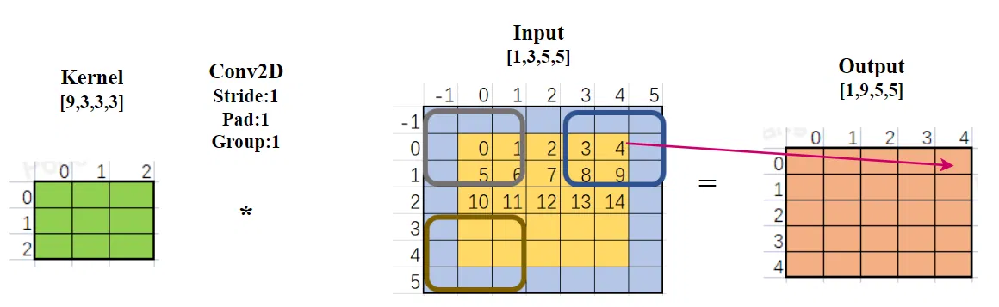
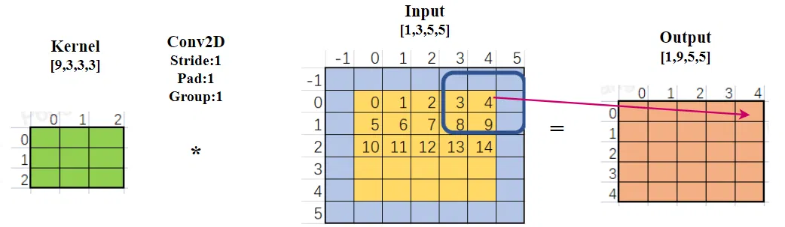
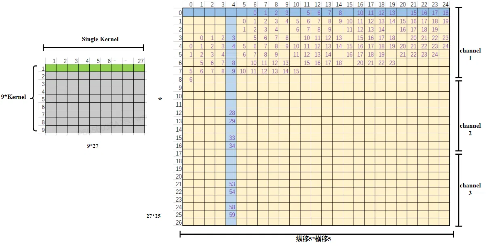
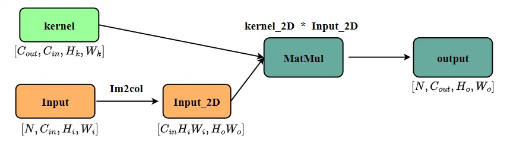
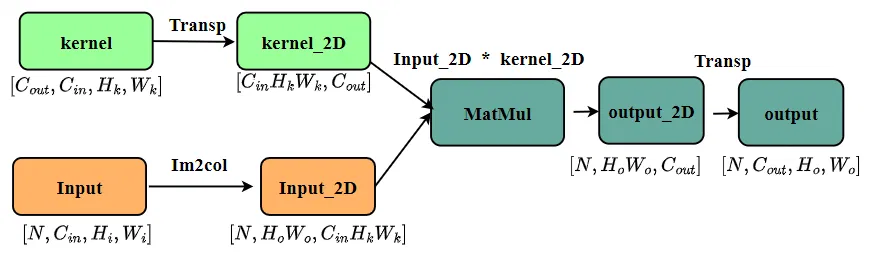

本文为最基本的 Im2Col 算法的原理及实现。
加速算法道阻且长，想要选择最优的算法，需要通盘考虑现实需求、软件算法、硬件支持，这就是 “坚持理论联系实际”。 所以这里只是对 Im2Col 算法最基本的原理探讨。
探索本就是由正确和错误交织而成，还望各位不吝赐教！
现在想起来，光是遇到你这个家伙，就感觉自己赚到了。
------ 大家好啊 我是 暮冬 Z 羡慕
# 卷积算法
将 Im2col 算法之前，不得不再提一下卷积。卷积是一种运算，在神经网络中是提取特征的过程，具体的操作过程是在输入特征中不断滑动卷积核大小的窗口，与卷积核做乘加运算，得到输出结果。
先定义一下维度的符号： 卷积核 ：【C_out, C_in, Hk, Wk】 输入 ： 【B, C_in, H, W】 输出：【B, C_out, Ho, Wo】

上图是维度非常小的一个卷积运算的图示，左边卷积核维度为【9，3，3，3】，即个数为 9，通道数为 3（个数和通道数均未在图中展示出来）的 3*3 卷积核。中间为 Input 的维度，周围方格蓝色代表 tensor 的 pad，中间黄色代表维度为【1，3，5，5】的 Input，即通道为 3，长宽 5*5。
进行卷积过程中，卷积核（3*3，通道为 3）先横向滑动（5 次），再纵向滑动（5 次）；每到一个位置计算 kernel 与 Input 对应位置的乘积和，因此得到 output 5*5 的结果。9 个卷积核依次进行，得到输出大小【1，9，5，5】
想要理解卷积乃至实现卷积加速算法，不仅要知道计算过程，还要格外关注数据在内存中的排布顺序。在内存中所有的数据都是一维存储的，例如 Input【1，3，5，5】，在内存中只有一个连续的、大小为 75 的数组，【1，3，5，5】只是它的逻辑维度；最后一个维度的 5 个数字是连续的（0~4），紧接着是下一行（5~9）......
图中仅画出了平面的大小，通道方向就要靠大家的想象了，上图中每个格子后面还有 2 个格子（通道数为 3）。
简单的卷积更容易看清 Im2col 算法的流程，本文以及后续系列文章都将以这个例子进行。
# Im2Col 算法
为什么要对卷积算法进行加速呢？
for(int batch =0; batch<in_n; batch++){ | |
while (s < out_c) { | |
for (int out_row = 0; out_row < out_h; ++out_row) { | |
for (int out_col = 0; out_col < out_w; ++out_col) { | |
for (int imap = 0; imap < in_c; ++imap) { | |
for (int kr = 0; kr < ker_size; ++kr) { | |
for (int kc = 0; kc < ker_size; ++kc) { | |
dosomething; | |
} | |
} | |
} | |
} | |
} | |
} | |
} |
上方是个典型的卷积算法，要实现一个卷积，不仅要遍历 batch、C_out、Ho、Wo，还要遍历整个卷积核的维度，整个循环达到了 7 层之多。当输入数据维度变大时，整个卷积占用的资源让人难以接受。提高神经网络的推理速度是推理引擎和 AI 芯片设计者不断的追求，而卷积又占了神经网络推理的大部分时间，因此卷积的加速是重中之重。
Im2Col 算法的原理就是将卷积运算转化为矩阵运算，这一转换带来以下好处：
-
易于优化：由于 GEMM 操作在计算库中被广泛研究和优化，开发者可以利用这些库的最新进展提高效率。
-
并行化和硬件支持：矩阵乘法天然适合并行处理；大多硬件平台都会充分利用其硬件资源，对矩阵乘法进行深度优化。通过使用如 CUDA、cuDNN、OpenBLAS 等库，可以实现并行计算，极大地加速卷积运算。
-
内存管理灵活性：虽然 im2col 需要额外的内存来存储展开后的矩阵，但通过调整实现策略（如分块处理），可以在内存使用和计算效率之间找到平衡。
总之，尽管 Im2col 算法没有减少任何计算量，甚至还给内存管理带来挑战，但是矩阵的高效运算、硬件、并行等仍然能够在很多场景下提高卷积计算效率。
# Im2Col 变换
Im2col 算法是将卷积转换成两个 2D 矩阵乘运算。(kernel_2D * input_2D) 与 (input_2D * kernel_2D) 矩阵乘的顺序不同，所需要的 4D 到 2D 变换也不同，我们先将 kernel_2D 放在前面，也就是 (kernel_2D * input_2D)，最后再讨论 kernel_2D 放在前面还是后面的区别。
再看一遍下面这个简单的卷积样例，输入 tensor 按照 nchw 排布。

直接展开 2D 形式，两个矩阵形式如下。

图 “Im2Col 2D 示意图” 左边是 kernel_2D
-
1. 原 kernel_4D 维度为【9，3，3，3】，拥有 9 个 kernel，将其第一个 kernel 按照【C_in, Kh, Kw】的顺序完全展平，也就是第一行绿色部分，共有 28 个数。
-
2. 依次将余下 8 个 kernel 按照相同的方式展平，就得到了 kernel_2D。
-
3.kernel_2D 维度为【9，27】
惊喜地发现，kernel_2D 的内存排布和 kernel_4D 完全一致，不需要任何内存搬运！
图 “Im2Col 2D 示意图” 右边是 Input_2D
-
1. 矩阵乘是 行 * 列；kernel_2D 中，一行代表一个卷积核【C_in, Kh, Kw】；所以 input_2D 的一列是 “一个卷积核滑动窗口” 对应的数据。
-
2. 右图中，前半部分空数据代表 pad, 后面的大面积空白只是懒得填上数字。
-
3. 例如，右图中蓝色的一列数据，代表图 2 中，卷积核滑动到蓝色窗口时对应的 input 数据。即第一个 channel：(pad,pad,pad;3,4,pad;8,9,pad)； 第二个 channel：(pad,pad,pad;28,29,pad;33,34,pad)；第三个 channel：(pad,pad,pad;53,54,pad;58,59,pad)
-
4. 那么 input_2D 一行数据代表什么呢？代表 kernel 在 input 中窗口的横向移动和纵向移动。在本例子中，窗口需要纵向滑动 5 次，每次纵向滑动都要横向滑动 5 次，一共产生 25 次窗口滑动。
-
5. 总结：25 次窗口滑动，每次滑动形成窗口对应的一列 27 个数据。input_2D 的维度为【27，25】
输出 output
kernel_2D 【9，27】* input_2D【27，25】得到结果 output_2D 【9，25】，刚好是输出 output【1，9，5，5】的内存排布方式。因此输出也不需要额外的内存转换。
# 代码实现
这里是将 input 由 nchw 转为 2D 排布的代码。
void Im2Col(const float *data_im, const int channels,const int height, const int width, const int kernel_h, | |
const int kernel_w, const int pad_h, const int pad_w, const int stride_h, const int stride_w, float *data_col) { | |
const int output_h = (height + 2 * pad_h - kernel_h ) / stride_h + 1; | |
const int output_w = (width + 2 * pad_w - kernel_w) / stride_w + 1; | |
const int channel_size = height * width; | |
for (int channel = 0; channel < channels; channel++, data_im += channel_size) { | |
for (int kernel_row = 0; kernel_row < kernel_h; kernel_row++) { | |
for (int kernel_col = 0; kernel_col < kernel_w; kernel_col++) { | |
int input_row = -pad_h + kernel_row; | |
for (int output_rows = 0; output_rows<output_h; output_rows++) { | |
if (!is_a_ge_zero_and_a_lt_b(input_row, height)) { | |
for (int output_cols = 0; output_cols<output_w; output_cols++) { | |
*(data_col++) = 0; | |
} | |
} else { | |
int input_col = -pad_w + kernel_col; | |
for (int output_col = 0; output_col<output_w; output_col++) { | |
if (is_a_ge_zero_and_a_lt_b(input_col, width)) { | |
*(data_col++) = data_im[input_row * width + input_col]; | |
} else { | |
*(data_col++) = 0; | |
} | |
input_col += stride_w; | |
} | |
} | |
input_row += stride_h; | |
} | |
} | |
} | |
} | |
} |
# 矩阵乘先后顺序的影响
以严格按照矩阵标准的 行 * 列 运算为前提，权重和输入的先后顺序会影响其内存排布。

在输入为 nchw 排布，输出也是 nchw 排布情况下，kernel_2D 在前，Input_2D 在后，只需要对 Input 进行 Im2Col 变换。

在输入为 nchw 排布，输出也是 nchw 排布情况下，Input_2D 在前，kernel_2D 在后，多出了对 kernel 和 output 的转置操作。
当然，在真正运算矩阵乘时，如果有行优先货列优先的调整，就需要具体问题具体分析了。
# 后记
本博客目前以及可预期的将来都不会支持评论功能。各位大侠如若有指教和问题，可以在我的 github 项目 或随便一个项目下提出 issue，并指明哪一篇博客，我看到一定及时回复！